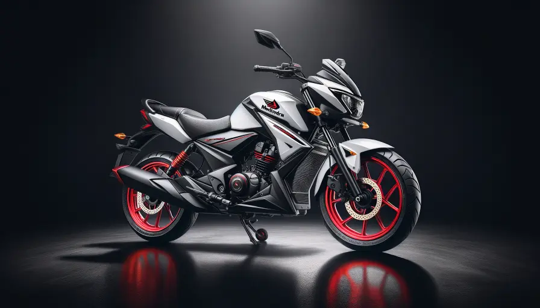
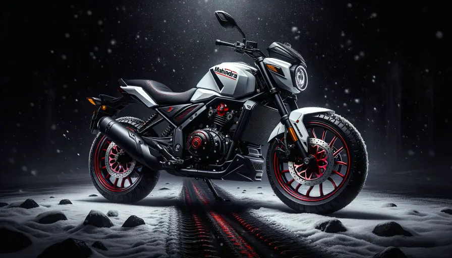
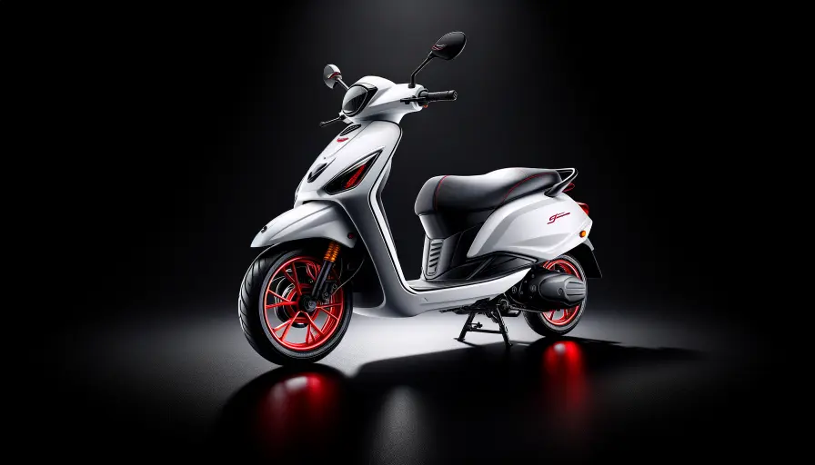
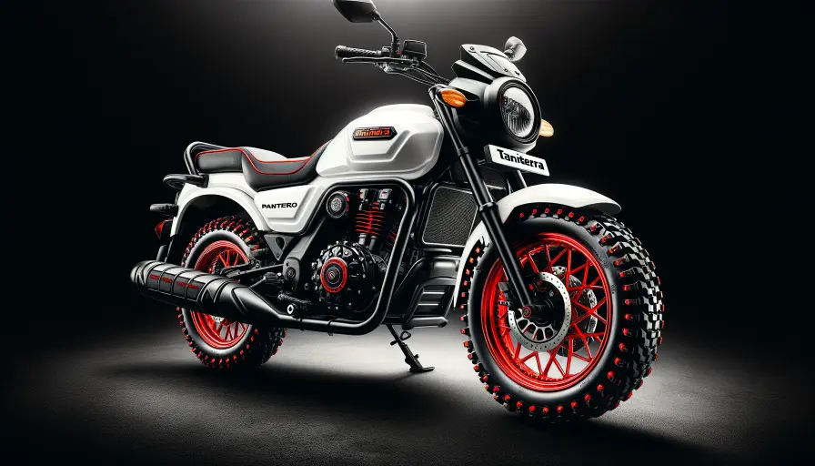
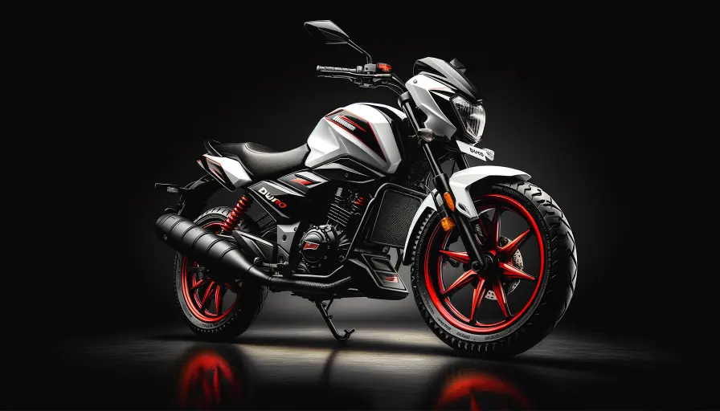
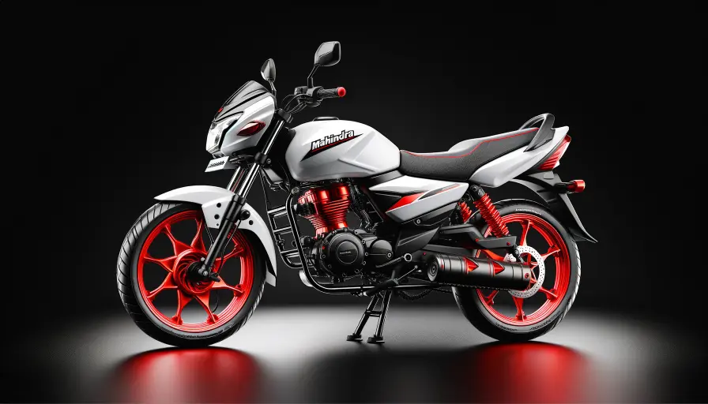
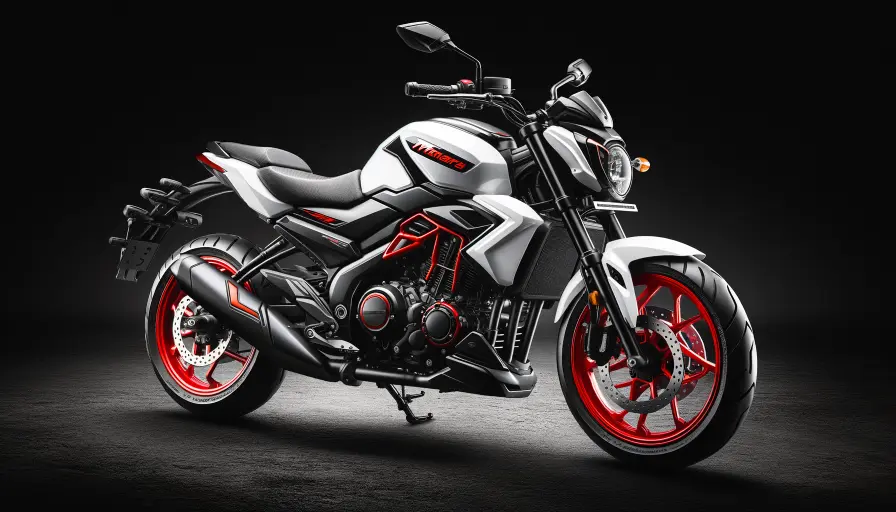
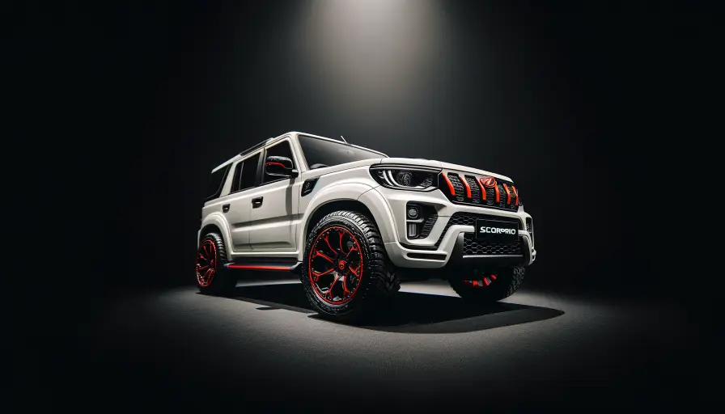

Mahindra
Mahindra Centuro Service & Repair
Starting ₹799
Professional doorstep service for your Mahindra Centuro. Certified mechanics, genuine Mahindra parts, 30-day warranty.
Book Mahindra Centuro ServiceTransparent Pricing
Mahindra Centuro Service Pricing
Our Promise
Why 2,00,000+ Customers Choose Ride N Repair
🏠
Doorstep Service
Expert mechanics come to your home or office — no garage trips needed.
🎓
Certified Mechanics
Trained, verified professionals with years of experience across all brands.
💰
Transparent Pricing
No hidden charges. See exact pricing before you book.
🔒
Genuine Parts
OEM and genuine spare parts only. Never compromise on quality.
📸
Live Updates
Before/after photos, real-time progress tracking via our app.
🛡️
30-Day Warranty
Every service backed by a 30-day warranty on parts and labour.
More Mahindra
Other Mahindra Models

Mahindra StallioView Services →
Mahindra GustoView Services →
Mahindra PanteroView Services →
Mahindra DuroView Services →
Mahindra SalutoView Services →
Mahindra MojoView Services → Mahindra XUV 500View Services →
Mahindra XUV 500View Services →
Mahindra ScorpioView Services →Related Services
You Might Also Need
FAQ
Mahindra Centuro Service — Common Questions
Need Mahindra Centuro Service?
Book Now — Get It Done Today.
Doorstep service · Certified mechanics · ₹799 onwards · 30-day warranty